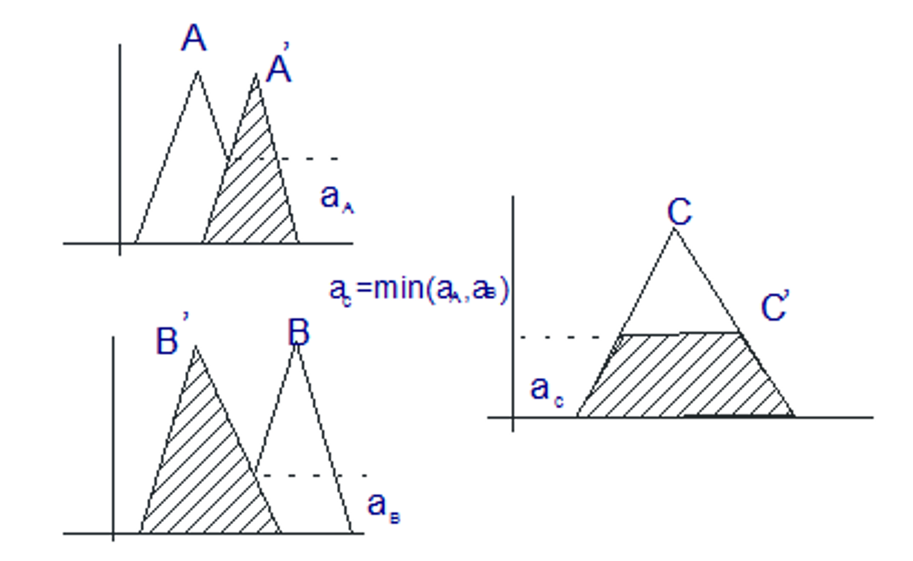
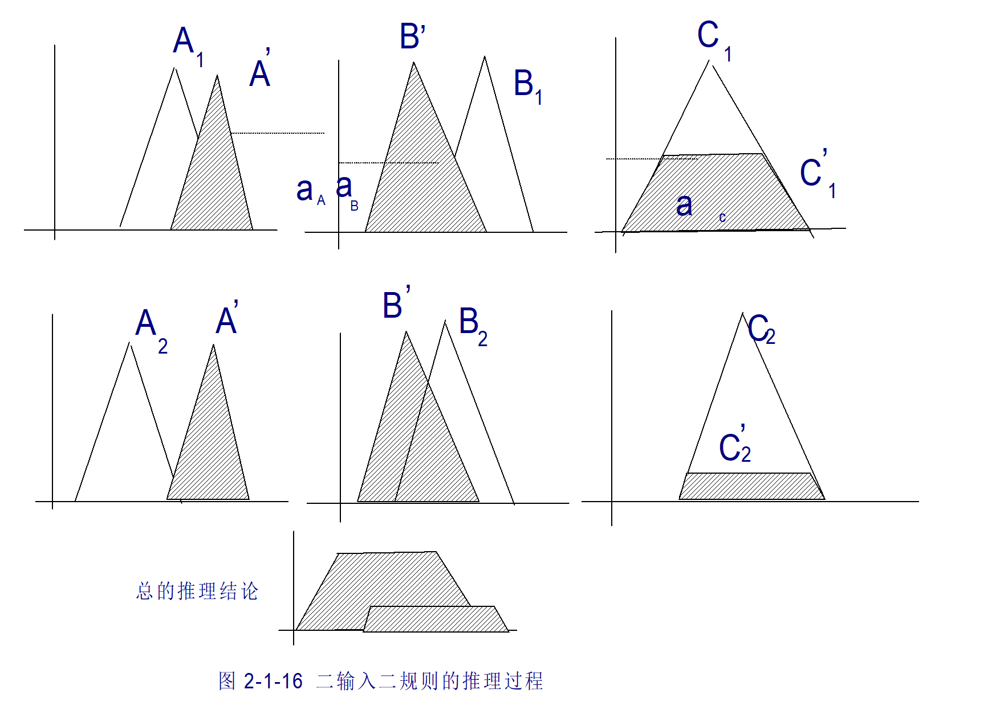

PPT 第 2 页
课程基本信息
课程安排
1. 课内理论：20 学时
2. 课内实验：12 学时
教学日历
共 11 次课：理论 20 学时 + 实验 12 学时
| 周 | 教学内容 | 教学学时 | 实验学时 |
|---|
| 0 | 绪论、模糊控制理论基础 | 1+2 | |
| 1 | 模糊控制系统 | 3 | |
| 2 | 模糊控制系统实验 | | 3 |
| 4 | 人工神经网络模型 | 3 | |
| 5 | 神经网络控制论 | 3 | |
| 6 | 神经网络控制系统实验 | | 3 |
| 7 | 智能控制集成技术 | 3 | |
| 8 | 智能控制集成技术实验 | | 3 |
| 9 | 强化学习方法 | 3 | |
| 10 | 强化学习控制实验 | | 3 |
| 11 | 先进智能控制概论 | 2 | |
| 11 次课 | 20 | 12 |
考核成绩构成
平时成绩：10%
实验成绩：40%（10% × 4）
课程设计成绩：50%
PPT 第 5 页
本章提纲
- 智能控制的发展过程
- 智能控制的主要方法
- 智能控制系统的构成原理
PPT 第 6 页
问题引入
- 为什么要搞智能控制？
- 什么是智能控制？
- 智能控制有哪些基础方法？
PPT 第 7–10 页
一、智能控制的发展过程
智能控制问题的提出
经典控制理论：研究的对象是单变量常系数线性系统，且只适用于单输入单输出控制系统。
现代控制理论：研究的对象是多变量常系数线性系统。
那么对于以下这类系统，如何处理：
智能控制理论是针对此类问题的控制提出的一种新方法。
智能控制的发展得益于
- 现代计算机技术发展
- 数字通讯技术发展
- 数字控制技术发展
智能控制的发展
概念的提出
- 1965 年，著名学者 K. S. Fu（傅京逊）把人工智能的启发式推理规则用于学习系统，为控制技术迈向智能化揭开了崭新的一页。
- 1966 年，Mendel 提出了"人工智能控制"的新概念。
- 1967 年，Leondes 和 Mendel 首次使用了"智能控制（Intelligent Control）"一词，并把记忆、目标分解等技术应用于学习控制系统。
学科的形成
- 1971 年，K. S. Fu（傅京逊）从发展学习控制的角度首次提出智能控制这一新兴学科，归纳了三种类型的智能控制系统：
- 人作为控制器的控制系统
- 人机结合作为控制器的控制系统
- 无人参与的自主控制系统
- 1977 年，Saridis 出版了《随机系统的自组织控制》，丰富了智能控制的内涵。
- K. J. Åström 提出了"专家控制"思想。
- 1985 年 8 月，IEEE 在美国纽约召开了第一届智能控制学术讨论会。
PPT 第 12–19 页
二、智能控制的主要方法
四类基础方法：专家系统和专家控制、模糊控制、神经元网络控制、学习控制。
方法 1
专家系统和专家控制
专家控制是将专家系统的理论和技术与控制理论和方法有机地结合起来，在未知环境下模仿专家的智能，实现对系统的有效控制。
一般的专家控制系统由三部分组成：
- 控制机制：决定控制过程的策略，即控制哪一个规则被激活、什么时候被激活等。
- 推理机制：实现知识之间的逻辑推理以及与知识库的匹配。
- 知识库：包括事实、判断、规则、经验以及数学模型。
核心：符号逻辑推理（如 IF-THEN 规则库 + 推理机）
工业应用
| 工业应用 | 专家控制的作用 |
|---|
| 水泥回转窑控制 | 处理非线性、大时滞，稳定煅烧温度 |
| 水泥磨机控制 | 优化粉磨工艺，降低能耗 |
| 沉降电炉电极控制 | 自动调节电极插入深度，精确控制电功率 |
| 篦冷机控制 | 提升熟料产量，降低煤耗 |
专家控制系统存在的困难
- 专家经验知识的获取问题
- 动态知识的获取问题
- 专家控制系统的稳定性分析
现状纯规则式专家系统已被数据驱动方法（如深度学习、强化学习）全面取代；仅存于小家电（如洗衣机模糊逻辑）、工业报警管理或可解释性要求极高的低维度决策场景。
方法 2
模糊控制
模糊控制主要是模仿人的控制经验而不是依赖控制对象模型，因此模糊控制器实现了人的某些智能。
模糊控制的三个基本组成部分：
- 模糊化
- 模糊决策
- 精确化计算
模糊控制研究的问题
- 适合于解决工程上普遍适用的稳定性分析方法、稳定性评价方法和可控性评价方法
- 模糊控制规则设计方法的研究
- 模糊控制器参数的最优调整理论的确定及修正推理规则的学习方式
- 模糊动态系统的辨识方法
- 模糊预测系统的设计方法和提高计算速度的算法
现状工业应用成熟，非学术前沿。
方法 3
神经元网络控制
神经元控制是模拟人脑神经中枢系统智能活动的一种控制方式。从本质上看，神经网络是一种不依赖模型的自适应函数估计器。
神经元网络具有特点：
- 非线性映射能力
- 并行计算能力
- 自学习能力
- 强鲁棒性
神经元网络在控制系统中所起的作用（四大类）
- 在基于模型的各种控制结构中充当对象的模型；
- 充当控制器；
- 在控制系统中起优化计算的作用；
- 与其它智能控制（如专家系统、模糊控制）相结合，为其提供非参数化对象模型、推理模型等。
现状浅层网络的技术形态过时，但梯度下降的训练思想是永恒的经典。
方法 4
学习控制
学习控制：通过重复各种输入信号，并从外部校正该系统，从而使系统对特定输入具有特定响应。
学习控制根据系统工作对象的不同可分为两大类：
- 迭代学习控制：对具有可重复性的被控对象，利用控制系统的先前经验，寻求一个理想的控制输入。而这个寻求的过程就是对被控对象反复训练的过程。
- 自学习控制系统：不要求被控过程必须是重复性的。它能通过在线实时学习，自动获取知识，并将所学的知识用来不断地改善具有未知特征过程的控制性能。
PPT 第 21–25 页
三、智能控制系统的构成原理
智能系统
具备一定智能行为的系统。具体地说，若对于一个问题的激励输入，系统具备一定的智能行为，它能够产生合适的求解问题的响应，这样的系统就称为智能系统。
按照智能控制系统的定义，其典型的原理结构可由七部分组成：广义对象、执行器、传感器、感知信息处理、规划与控制、认知、通讯交互接口。
智能控制系统典型原理结构（左：七部分组成；右：分层递阶结构）｜重绘自 PPT 第 22 页
智能控制系统特点
- 智能控制系统一般具有以知识表示的非数学广义模型和以数学模型表示的混合控制过程。它适用于含有复杂性、不完全性、模糊性、不确定性和不存在已知算法的生产过程。
- 智能控制器具有分层信息处理和决策机构。它实际上是对人神经结构和专家决策机构的一种模仿。
- 智能控制器具有非线性和变结构特点。
- 智能控制器具有多目标优化能力。
- 智能控制器能够在复杂环境下学习。
智能控制系统应具备的功能特点（一条或几条）
- 自适应（self-adaptation）
- 自学习（self-recognition）
- 自组织（self-organization）
- 自诊断（self-diagnosis）
- 自修复（self-repairing）
智能控制系统研究的主要数学工具
- 符号推理与数值计算的结合
- 离散事件系统与连续时间系统分析的结合
- 模糊集理论
- 神经元网络理论
- 优化理论
智能控制是人工智能、运筹学、控制三者的交集（三元交集论）｜重绘自 PPT 第 25 页
PPT 第 26 页
本课程模块地图
全课程按模块展开：模糊控制（第 0–2 周）→ 神经网络控制（第 4–6 周）→ 智能控制集成技术（第 7–8 周）→ 强化学习（第 9–10 周）→ 先进智能控制概论（第 11 周）。本讲覆盖第 0 周内容：绪论 + 模糊控制理论基础。
PPT 第 28 页
本章提纲
- 引言
- 模糊集合论基础
- 模糊逻辑、模糊逻辑推理和合成
PPT 第 29–32 页
一、引言
模糊控制理论的发展
- 1965 年，L. A. Zadeh 提出模糊集理论；
- 1972 年，L. A. Zadeh 提出模糊控制原理；
- 1974 年，E. H. Mamdani 应用于蒸汽机和锅炉控制中；
- 80 年代：污水处理、汽车、交通管理、模糊芯片、模糊控制的硬件系统；
- 90 年代：家电、机器人、地铁；
- 21 世纪：更为广泛的应用。
模糊控制理论的特点
- 无需知道被控对象的数学模型
- 与人类思维的特点一致：模糊性、经验性
- 构造容易
- 鲁棒性好
模糊控制的定义
模糊控制器的输出是通过观察过程的状态和一些如何控制过程的规则的推理得到的。
定义主要基于三个概念：
- 测量信息的模糊化：将实测物理量转化为在该语言变量相应论域内不同语言值的模糊子集。
- 推理机制：使用数据库和规则库，它的作用是根据当前的系统状态信息来决定模糊控制的输出子集。
- 模糊集的精确化计算：将推理机制得到的模糊控制量转化为一个清晰、确定的输出控制量的过程。
模糊控制系统结构示意图｜重绘自 PPT 第 32 页
PPT 第 33–34 页
二、模糊集合论基础：经典集合
经典集合论：19 世纪末德国数学家乔·康托尔（Georg Cantor, 1845–1918）创立，是现代数学的基础。
特点：内涵和外延都必须是明确的。
表示方法
- 列举法：$U=\{1,2,3,4,5,6,7,8,9,10\}$
- 定义法：$U=\{u \mid u \text{ 为自然数且 } u<5\}$
- 归纳法：$U=\{u_{i+1}=u_i+1,\ i=1,2,\dots,\ u_1=1\}$
- 特征函数法：用特征函数值表示元素属于集合的程度
例 2-1
设集合 $U$ 是由 1 到 10 的十个自然数组成。
求：试用上述前三种方法写出该集合的表达式。
解：
- 列举法：$U=\{1,2,3,4,5,6,7,8,9,10\}$
- 定义法：$U=\{u \mid u \text{ 为自然数且 } 1\le u\le 10\}$
- 归纳法：$U=\{u_{i+1}=u_i+1,\ i=1,2,\dots,9,\ u_1=1\}$
经典集合的内涵和外延都是明确的。
PPT 第 35–40 页
二、模糊集合论基础：模糊集合
在人们的思维中，存在许多没有明确外延的概念，即模糊概念。如"速度的快慢"、"年龄的大小"、"温度的高低"等模糊概念没有明确的外延，怎么办？
模糊集合
把"属于或不属于"扩展成用 0 到 1 之间连续变化值来描述元素的属于程度。这个 0 到 1 之间连续变化值又称作隶属度（Degree of Membership）。
隶属度函数：将特征函数值扩展为取值为 0–1 之间的值，用隶属度 $\mu_F$（Degree of Membership）表示。
特征函数扩展为隶属度函数：温度"冷 / 舒适 / 热"的两种描述对比｜重绘自 PPT 第 36 页
模糊集合（Fuzzy Sets）
论域：记 $U$ 为一可能是离散或连续的集合，用 $\{u\}$ 表示。
定义 2-1 模糊集合（Fuzzy Sets）
论域 $U$ 中的模糊集合 $F$ 是用一个在闭区间 $[0,1]$ 上取值的隶属度 $\mu_F$ 来表示，即：
$$\mu_F:\ U \rightarrow [0,1]$$
- $\mu_F(u)=1$，表示 $u$ 完全属于 $F$；
- $\mu_F(u)=0$，表示 $u$ 完全不属于 $F$；
- $0<\mu_F(u)<1$，表示 $u$ 部分属于 $F$。
论域 $U$ 中的模糊集 $F$ 可以用元素 $u$ 和它的隶属度 $\mu_F$ 来表示：
$$F=\left\{\left(u,\ \mu_F(u)\right)\ \middle|\ u\in U\right\}\quad(\text{离散域})$$
$$F=\int_U \mu_F\,/\,u\quad(\text{连续域})$$
例 2-2
设 $F$ 表示远远大于 0 的实数集合。
求：$F$ 的隶属度函数。
解：
$$\mu_F(x)=\begin{cases} 0, & x\le 0 \\[4pt] \dfrac{1}{1+\dfrac{100}{x^2}}, & x>0 \end{cases}$$
例 2-3 Zadeh（扎德）表示法
考虑论域 $U=\{0,1,2,3,4,5\}$，和模糊集 $F$"接近 0 的整数"。
求：$F$ 的隶属度函数。
解：
$$F=\frac{1.0}{0}+\frac{0.9}{1}+\frac{0.75}{2}+\frac{0.5}{3}+\frac{0.2}{4}+\frac{0.1}{5}$$
PPT 第 41–47 页
二、模糊集合论基础：模糊集合的运算
基本运算
- 包含：$A\subseteq B \;\leftrightarrow\; \mu_A(u)\le \mu_B(u)$
- 并集：$\mu_{A\cup B}(u)=\max\left[\mu_A(u),\mu_B(u)\right]=\mu_A(u)\vee\mu_B(u)$
- 交集：$\mu_{A\cap B}(u)=\min\left[\mu_A(u),\mu_B(u)\right]=\mu_A(u)\wedge\mu_B(u)$
- 补集：$B=\bar{A} \;\leftrightarrow\; \mu_B(u)=1-\mu_A(u)$
例 2-4
已知模糊子集：
$$A=\frac{0.6}{u_1}+\frac{0.5}{u_2}+\frac{1}{u_3}+\frac{0.4}{u_4}+\frac{0.3}{u_5},\qquad B=\frac{0.5}{u_1}+\frac{0.6}{u_2}+\frac{0.3}{u_3}+\frac{0.4}{u_4}+\frac{0.7}{u_5}$$
求：$A\cup B$，$A\cap B$。
解：
$$\begin{aligned} A\cup B&=\frac{0.6\vee 0.5}{u_1}+\frac{0.5\vee 0.6}{u_2}+\frac{1\vee 0.3}{u_3}+\frac{0.4\vee 0.4}{u_4}+\frac{0.3\vee 0.7}{u_5}\\ &=\frac{0.6}{u_1}+\frac{0.6}{u_2}+\frac{1}{u_3}+\frac{0.4}{u_4}+\frac{0.7}{u_5}\end{aligned}$$
$$\begin{aligned} A\cap B&=\frac{0.6\wedge 0.5}{u_1}+\frac{0.5\wedge 0.6}{u_2}+\frac{1\wedge 0.3}{u_3}+\frac{0.4\wedge 0.4}{u_4}+\frac{0.3\wedge 0.7}{u_5}\\ &=\frac{0.5}{u_1}+\frac{0.5}{u_2}+\frac{0.3}{u_3}+\frac{0.4}{u_4}+\frac{0.3}{u_5}\end{aligned}$$
其他算子
- 代数积：$A\cdot B \;\leftrightarrow\; \mu_{A\cdot B}(u)=\mu_A(u)\,\mu_B(u)$
- 代数和：$A\hat{+}B \;\leftrightarrow\; \mu_{A\hat{+}B}(u)=\mu_A(u)+\mu_B(u)-\mu_A(u)\mu_B(u)$
- 有界和：$A\oplus B \;\leftrightarrow\; \mu_{A\oplus B}(u)=\left[\mu_A(u)+\mu_B(u)\right]\wedge 1$
- 有界差：$A\ominus B \;\leftrightarrow\; \mu_{A\ominus B}(u)=\left[\mu_A(u)-\mu_B(u)\right]\vee 0$
- 有界积：$A\otimes B \;\leftrightarrow\; \mu_{A\otimes B}(u)=\left[\mu_A(u)+\mu_B(u)-1\right]\vee 0$
模糊集合运算的基本性质
- 幂等律：$A\cup A=A$，$A\cap A=A$
- 交换律：$A\cup B=B\cup A$，$A\cap B=B\cap A$
- 结合律：$(A\cup B)\cup C=A\cup(B\cup C)$，$(A\cap B)\cap C=A\cap(B\cap C)$
- 分配律：$A\cup(B\cap C)=(A\cup B)\cap(A\cup C)$，$A\cap(B\cup C)=(A\cap B)\cup(A\cap C)$
- 吸收律：$A\cap(A\cup B)=A$，$A\cup(A\cap B)=A$
- 德·摩根律：$\overline{(A\cap B)}=\bar{A}\cup\bar{B}$，$\overline{(A\cup B)}=\bar{A}\cap\bar{B}$
- 双重否定律：$\bar{\bar{A}}=A$
不满足互补律，即：$A\cap\bar{A}\ne\varnothing$，$A\cup\bar{A}\ne U$。
PPT 第 48–62 页
二、模糊集合论基础：隶属度函数的建立
隶属度函数的建立：
- 是一个关键问题，也是一个难题
- 具有"模糊性"、经验性和主观性
- 无统一的设计方法
- 具有客观的原则，一般具备以下四大原则
原则 1：必须是凸模糊集合（呈单峰形）
凸模糊集合（单峰）与非凸模糊集合（多峰）对比｜重绘自 PPT 第 49 页
原则 2：变量所取隶属度函数通常是对称和平衡的
在模糊控制系统中，每一个输入变量（以后又可称语言变量）可以有多个标称名（即又称语言值）。模糊变量的标称值选择既不能过多又不能过少，一般取 3～9 个为宜，并且通常取奇数个。在"零"、"适中"或"合适"集合的两边语言值的隶属度函数通常是取对称和平衡的。
原则 3：遵从语意顺序、避免不恰当的重叠
在相同论域上使用的具有语义顺序关系的若干标称的模糊集合，例如"速度很低"、"速度低"、"速度适中"、"速度高"、"速度很高"等子集的中心值位置必须按这一次序排列。
语言值的隶属度函数按语意顺序排列（适中 → 高 → 很高）｜重绘自 PPT 第 51 页
原则 4：要考虑重叠指数（一般取重叠率 0.2～0.6）
$$\text{重叠率}=\frac{\text{重叠范围}}{\text{附近模糊隶属函数的范围}}$$
$$\text{重叠鲁棒性}=\frac{\text{总的重叠面积}}{\text{总的重叠最大面积}}=\frac{\displaystyle\int_L^U\left(\mu_{A1}+\mu_{A2}\right)\mathrm{d}x}{2\,(U-L)}$$
重叠指数示意：两个相邻隶属度函数的重叠范围与重叠面积｜重绘自 PPT 第 52 页
隶属度函数的建立方法
1）模糊统计法
对论域 $U$ 上的一个确定元素 $v_0$ 是否属于论域上的一个可变动的清晰集合 $A^*$，并作出清晰的判断。
$$v_0 \text{ 对 } A \text{ 的隶属频率}=\frac{v_0\in A^*\text{ 的次数}}{\text{试验总次数 } n}$$
2）例证法
从已知有限个 $\mu_A$ 的值，来估计论域 $U$ 上模糊子集 $A$ 的隶属度函数。
3）专家经验法
根据专家的实际经验给出模糊信息的处理算式或相应权系数值来确定隶属度函数的一种方法。
4）二元对比排序法
通过对多个事物之间的两两对比来确定某种特征下的顺序，由此来决定这些事物对该特征的隶属度函数的大体形状。相对比较法是设论域 $U$ 中元素 $v_1,v_2,\dots,v_n$ 要对这些元素按某种特征进行排序，首先要在二元对比中建立比较等级，而后再用一定的方法进行总体排序，以获得诸元素对于该特性的隶属函数。
设论域 $U$ 中一对元素 $(v_1,v_2)$，其具有某特征的等级分别为 $g_{v_2}(v_1)$、$g_{v_1}(v_2)$，即在 $v_1$ 和 $v_2$ 的二元对比中，如果 $v_1$ 具有某特征的程度用 $g_{v_2}(v_1)$ 来表示，则 $v_2$ 某特征的程度用 $g_{v_1}(v_2)$ 来表示。并且该二元对比级的数对 $\left(g_{v_2}(v_1),g_{v_1}(v_2)\right)$ 必须满足：$0\le g_{v_2}(v_1)\le 1$、$0\le g_{v_1}(v_2)\le 1$，令：
$$g(v_1\,/\,v_2)=\frac{g_{v_2}(v_1)}{\max\left(g_{v_2}(v_1),\ g_{v_1}(v_2)\right)}$$
定义 $g(v_i\,/\,v_j)=1$（当 $i=j$ 时），则可构造出矩阵 $G$，并称 $G$ 为相及矩阵：
$$G=\begin{bmatrix} 1 & g(v_1\,/\,v_2) \\ g(v_2\,/\,v_1) & 1 \end{bmatrix}$$
若对矩阵 $G$ 的每一行取最小值，如对第 $i$ 行取 $g_i=\min\left[g(v_i/v_1),\,g(v_i/v_2),\,\dots,\,g(v_i/v_n)\right]$，并按其值的大小排序，即可得到元素 $(v_1,v_2,\dots,v_n)$ 对某特征的隶属度函数。
隶属度函数的三大类图形
隶属度函数的确定还没有一个统一的方法，但隶属度的图形基本上可归结为三大类：
- 左大右小的偏小型下降函数（又称 Z 函数）
- 左小右大的偏大型上升函数（又称 S 函数）
- 对称型凸函数（又称 Π 函数）
隶属度函数三大类：Z 函数 / S 函数 / Π 函数及其常见形态｜重绘自 PPT 第 60–62 页
PPT 第 63–74 页
二、模糊集合论基础：模糊关系
多元关系
二元关系：两个客体之间的关系；多元关系：三个客体以上的关系。
考察 $n$ 个集合的直积 $A_1\times A_2\dots\times A_n$，其隶属度函数为 $\mu_R(a_1,a_2,\dots,a_n)$。
模糊关系
普通关系：表示元素之间是否关联。
模糊关系：通过两个论域上的笛卡尔积把一个叫 $A$ 论域中的元素映射到另一个叫 $B$ 的论域上去。然而，这两个论域上的序偶间的关系"强度"不是用特征函数来测量，而是用隶属度函数在单位区间 $[0,1]$ 的不同值来表示其关系的"强度"。
定义
所谓 $A$，$B$ 两集合的直积
$$A\times B=\left\{(a,b)\mid a\in A,\ b\in B\right\}$$
中的一个模糊关系 $R$，是指以 $A\times B$ 为论域的一个模糊子集，序偶 $(a,b)$ 的隶属度为 $\mu_R(a,b)$。
模糊关系的表示方法 1：模糊集合表示法
$$R=\int_{A\times B}\mu_R(a,b)\,/\,(a,b),\qquad a\in A,\ b\in B$$
举例
考查两个整数间的"大得多"的关系。设论域 $U=\{1,5,7,9,20\}$。
$$\begin{aligned} R={}&\frac{0.5}{(5,1)}+\frac{0.7}{(7,1)}+\frac{0.8}{(9,1)}+\frac{1.0}{(20,1)}+\frac{0.1}{(7,5)}+\frac{0.3}{(9,5)}\\ &+\frac{0.95}{(20,5)}+\frac{0.1}{(9,7)}+\frac{0.9}{(20,7)}+\frac{0.85}{(20,9)}\end{aligned}$$
模糊关系的表示方法 2：模糊矩阵表示法（适用于二元关系）
$$R=\begin{bmatrix} r_{11} & r_{12} & \cdots & r_{1j} & \cdots & r_{1n}\\ r_{21} & r_{22} & \cdots & r_{2j} & \cdots & r_{2n}\\ \vdots & \vdots & & \vdots & & \vdots\\ r_{i1} & r_{i2} & \cdots & r_{ij} & \cdots & r_{in}\\ \vdots & \vdots & & \vdots & & \vdots\\ r_{m1} & r_{m2} & \cdots & r_{mj} & \cdots & r_{mn} \end{bmatrix},\qquad r_{ij}=\mu_R(a_i,\,b_j)$$
模糊关系与模糊逻辑推理的关系
如果有：IF $A(u)$ THEN $B(v)$
则 $A$ 与 $B$ 存在模糊关系 $A$ 和 $B$ 的直积，记为 $A\times B$：
$$A\times B=\int_{U\times V}\min\left(\mu_A(u),\,\mu_B(v)\right)\,/\,(u,\,v)$$
其中 $U\times V$ 是有序对 $(u,v)$ 的集合，即 $U\times V=\{(u,v)\mid u\in U,\ v\in V\}$。
注意不表示因果，只表示存在担保。 思考：为什么是 min？
笛卡尔积算子（⊗ 算子）
笛卡尔积算子也是用来计算模糊关系的重要算子：$A_1,A_2,\dots,A_n$ 的笛卡尔积是在积空间 $U_1\times U_2\times\dots\times U_n$ 中的一个模糊集，其隶属度函数为：
- 直积（极小算子），用 $\mu_{\min}$ 表示：
$$\mu_{A_1\times A_2\times\dots\times A_n}(u_1,u_2,\dots,u_n)=\min\left\{\mu_{A_1}(u_1),\mu_{A_2}(u_2),\dots,\mu_{A_n}(u_n)\right\}$$
- 代数积，用 $\mu_{AP}$ 表示：
$$\mu_{A_1\times A_2\times\dots\times A_n}(u_1,u_2,\dots,u_n)=\mu_{A_1}(u_1)\,\mu_{A_2}(u_2)\,\cdots\,\mu_{A_n}(u_n)$$
例 2-9
考虑如下模糊条件语句：
如果 $C$ 是慢的，则 $A$ 是快的。
其中 $C$，$A$ 分别属于两个不同的论域 $U$，$V$。其隶属度函数分别为：
$$A=\text{快}=\frac{0}{0}+\frac{0}{20}+\frac{0.3}{40}+\frac{0.7}{60}+\frac{1}{80}+\frac{1}{100}$$
$$C=\text{慢}=\frac{1}{0}+\frac{0.7}{20}+\frac{0.3}{40}+\frac{0}{60}+\frac{0}{80}+\frac{0}{100}$$
求：它们的直积和代数积。
解：
① 直积（极小算子）$\mu_{\min}(C\times A)=\sum\mu_C(u)\otimes\mu_A(v)$，即逐项取 $\min\left[\mu_C(u),\mu_A(v)\right]$：
$$C\times A=\begin{bmatrix} 0 & 0 & 0.3 & 0.7 & 1 & 1\\ 0 & 0 & 0.3 & 0.7 & 0.7 & 0.7\\ 0 & 0 & 0.3 & 0.3 & 0.3 & 0.3\\ 0 & 0 & 0 & 0 & 0 & 0\\ 0 & 0 & 0 & 0 & 0 & 0\\ 0 & 0 & 0 & 0 & 0 & 0 \end{bmatrix}$$
② 代数积 $\mu_{AP}(C\times A)=\sum\mu_C(u)\cdot\mu_A(v)$：
$$C\times A=\begin{bmatrix} 0 & 0 & 0.3 & 0.7 & 1 & 1\\ 0 & 0 & 0.21 & 0.49 & 0.7 & 0.7\\ 0 & 0 & 0.09 & 0.21 & 0.3 & 0.3\\ 0 & 0 & 0 & 0 & 0 & 0\\ 0 & 0 & 0 & 0 & 0 & 0\\ 0 & 0 & 0 & 0 & 0 & 0 \end{bmatrix}$$
上确界（Sup）算子与下确界（Inf）算子
$$R\circ S=\left\{\left[\sup_{V}\left(\mu_R(u,v)\otimes\mu_S(v,w)\right)\right],\ u\in U,\ v\in V,\ w\in W\right\}$$
Sup-min 合成：
$$R\circ S=\left\{\left[\max_{V}\left[\min\left(\mu_R(u,v),\ \mu_S(v,w)\right)\right]\right],\ u\in U,\ v\in V,\ w\in W\right\}$$
Inf-max 合成：
$$R\bullet S=\left\{\left[\inf_{V}\left(\mu_R(u,v)\ s\ \mu_S(v,w)\right)\right],\ u\in U,\ v\in V,\ w\in W\right\}=\left\{\left[\min_{V}\left[\max\left(\mu_R(u,v),\ \mu_S(v,w)\right)\right]\right]\right\}$$
模糊关系的合成
如果 $R$ 和 $S$ 分别为笛卡尔空间 $U\times V$ 和 $V\times W$ 上的模糊关系，则 $R$ 和 $S$ 的合成是定义在笛卡尔空间 $U\times W$ 上的模糊关系，并记为 $R\circ S$。其隶属度函数的计算方法有两种。
矩阵形式（Sup-min）：
$$\begin{bmatrix} r_{i1} & r_{i2} & \cdots & r_{im}\\ \vdots & \vdots & & \vdots\end{bmatrix}_{m\times m}\circ\begin{bmatrix} s_{1k}\\ s_{2k}\\ \vdots\\ s_{mk}\end{bmatrix}_{m\times l}=\begin{bmatrix} \cdots & p_{ik} & \cdots\\ & & \end{bmatrix}_{m\times l},\qquad p_{ik}=\left(r_{i1}\wedge s_{1k}\right)\vee\left(r_{i2}\wedge s_{2k}\right)\vee\cdots\vee\left(r_{im}\wedge s_{mk}\right)$$
模糊关系的合成算子特性
- $R\circ I=I\circ R=R$
- $R\circ 0=0\circ R=0$
- $R^{m+1}=R^m\circ R$
- $R^m\circ R^n=R^{m+n}$
- $(R\cup T)\circ S=(R\circ S)\cup(T\circ S)$；$R\circ(T\cup S)=(R\circ T)\cup(R\circ S)$
- $(R\cap T)\circ S=(R\circ S)\cap(T\circ S)$；$R\circ(T\cap S)=(R\circ T)\cap(R\circ S)$
- 不满足交换律：$R\circ S\ne S\circ R$
PPT 第 76–83 页
三、模糊逻辑
模糊控制的核心是模糊控制规则库，而这些规则库实质上是一些不确定性推理规则的集合。要实现模糊控制的目标，必须研究不确定性推理。
模糊逻辑推理
- 模糊逻辑是研究含有模糊概念或带有模糊性的陈述句的逻辑。
- 是不确定性推理的主要方法之一。
- 是经典数理逻辑的推广。
二值逻辑
命题 $P$ 中的元素可以赋予一个二元真值 $T(P)$。在二元逻辑中，$T(P)$ 或者为 1（真）或者为 0（假）。设 $U$ 是所有命题构成的论域，则 $T$ 就是从这些命题（集合）中的元素 $u$ 到二元值 $(0,1)$ 的一个映射：
$$T:\ u\in U \rightarrow (0,1)$$
把两个或是两个以上的简单命题用命题联结词联结起来就称为复合命题，常用有：
- 析取 $\vee$：是"或"的意思；
- 合取 $\wedge$：是"与"的意思；
- 否定 $-$：是对原命题的否定；
- 蕴涵 $\rightarrow$：表示"如果……那么……"；
- 等价 $\leftrightarrow$：表示两个命题的真假相同，是"当且仅当"的意思。
二值逻辑的特点是一个命题不是真命题便是假命题。但在很多实际问题中要作出这种非真即假的判断是困难的，采用模糊命题的概念。
- 模糊命题的真值不是绝对的"真"或"假"，而是反映其以多大程度隶属于"真"。
- 真值的运算也就是隶属度函数的运算。
- 模糊逻辑是研究模糊命题的逻辑，而模糊命题是指含有模糊概念或者是带有模糊性的陈述句。
模糊命题的运算
- 模糊逻辑补：用来表示对某个命题的否定，$\bar{P}=1-P$
- 模糊逻辑合取：$P\wedge Q=\min(P,Q)$
- 模糊逻辑析取：$P\vee Q=\max(P,Q)$
- 模糊逻辑蕴含：如 $P$ 是真的，则 $Q$ 也是真的，$P\rightarrow Q=(1-P+Q)\wedge 1$
（还有其它蕴含运算方式）
- 模糊逻辑等价：$P\leftrightarrow Q=(P\rightarrow Q)\wedge(Q\rightarrow P)$
- 模糊逻辑限界积：各元素分别相加，大于 1 的部分作为限界积，$P\odot Q=(P+Q-1)\vee 0=\max(P+Q-1,\ 0)$
- 模糊逻辑限界和：各元素分别相加，比 1 小的部分作为限界和，$P\oplus Q=(P+Q)\wedge 1=\min(P+Q,\ 1)$
- 模糊逻辑限界差：各元素分别相减部分作为限界差，$P\ominus Q=(P-Q)\vee 0$
模糊逻辑运算的基本定律
- 幂等律：$P\vee P=P$，$P\wedge P=P$
- 交换律：$P\vee Q=Q\vee P$，$P\wedge Q=Q\wedge P$
- 结合律：$P\vee(Q\vee R)=(P\vee Q)\vee R$，$P\wedge(Q\wedge R)=(P\wedge Q)\wedge R$
- 吸收律：$P\vee(P\wedge Q)=P$，$P\wedge(P\vee Q)=P$
- 分配律：$P\vee(Q\wedge R)=(P\vee Q)\wedge(P\vee R)$，$P\wedge(Q\vee R)=(P\wedge Q)\vee(P\wedge R)$
- 双否律：$\bar{\bar{P}}=P$
- 德·摩根律：$\overline{P\vee Q}=\bar{P}\wedge\bar{Q}$，$\overline{P\wedge Q}=\bar{P}\vee\bar{Q}$
- 常数运算法则：$1\vee P=1$，$0\vee P=P$，$0\wedge P=0$，$1\wedge P=P$
注意：互补律在模糊逻辑中不成立。
PPT 第 84 页
随堂单选题1 分
在模糊逻辑（Fuzzy Logic）中，命题"小明是高个子"（设其隶属度为 0.8）的否命题（Negation）及其真值（隶属度）应表示为（ ）。
- A"小明是矮个子"，真值为 0.2
- B"小明是矮个子"，真值为 0.8
- C"小明不是高个子"，真值为 0.2 ✓
- D"小明不是高个子"，真值为 0.8
查看答案解析（答案：C）
第一步：锁定否命题的形式
在数理逻辑与模糊逻辑中，命题 $P$ 的否命题（$\neg P$）是对整个命题的否定，即"并非（小明是高个子）"，也就是"小明不是高个子"。若写成"小明是矮个子"，这属于对立命题（或反对关系），而非严格逻辑意义上的"否定"。
第二步：计算否命题的真值
模糊逻辑中，否定的运算规则是对隶属度取补，即：$1-0.8=0.2$。
PPT 第 85–93 页
三、模糊逻辑：模糊语言逻辑
模糊语言逻辑是由模糊语言构成的一种模拟人思维的逻辑。针对自然语言的模糊性；涉及概念：模糊数、语言值、语言变量、语言算子。
1、模糊数
连续论域 $U$ 中的模糊数 $F$ 是一个 $U$ 上的正规凸模糊集。
正规模糊集合：隶属度函数的最大值为 1，且论域中至少有 1 个元素 $u$ 的隶属度值为 1。用数学表达式表示就是：
$$\max_{u\in U}\ \mu_F(u)=1$$
凸集合：在隶属度函数曲线上任意两点之间曲线上的任一点所表示的隶属度都大于或者等于两点隶属度中较小的一个。用数学语言说，就是在实数集合的任意区间 $[a,b]$ 上，对于所有的 $x\in[a,b]$，都存在：
$$\mu_F(x)\ge \min\left(\mu_F(a),\ \mu_F(b)\right),\qquad a,\,b\in U,\ x\in[a,\,b]$$
就称 $F$ 是凸模糊集合。
2、语言值
在语言系统中，那些与数值有直接联系的词，如长、短、多、少、高、低、重、轻、大、小等，或者由它们再加上语言算子（如很、非常、较、偏等）而派生出来的词组，如不太大、非常高、偏重等，都被称为语言值。
语言值一般是模糊的，可以用模糊数来表示。
3、语言变量
语言变量是用一个五元素的集合 $\left(X,\ T(X),\ U,\ G,\ M\right)$ 来表征的：
- $X$：语言变量的名称（如"速度"）
- $T(X)$：语言值集合（如很慢、慢、较慢、中等、较快、快、很快）
- $U$：论域
- $G$：语言值规则（生成语言值的语法规则）
- $M$：算法规则（给每个语言值赋予隶属度函数的算法规则）
语言变量五元素之间的关系（图 2-1-10）｜重绘自 PPT 第 88 页
4、语言算子
为了对模糊的自然语言形式化和定量化，进一步区分和刻划模糊值的程度，常常还借用自然语言中的修饰词，诸如"较"、"很"、"非常"、"稍微"、"大约"、"有点"等来描述模糊值。引入语言算子：
1）语气算子
语气算子用来表达语言中对某一个单词或词组的确定性程度，包括强化算子和淡化算子：
$$H_\lambda(A)=A^\lambda\quad(A\text{ 为语言值})\qquad \lambda>1\ \text{强化算子};\quad \lambda<1\ \text{淡化算子}$$
例 2-12
我们以"年老"这个词为例，来说明语气算子的作用。
$$\text{“年老”}(x)=\mu_{\text{年老}}(x)=\begin{cases} 0, & 0\le x<50 \\[4pt] \dfrac{1}{1+\left[\dfrac{1}{5}(x-50)\right]^{-2}}, & x\ge 50 \end{cases}$$
求：非常老、比较老、有点老的隶属度函数。
解：
$$\text{“非常老”}(x)=\mu_{\text{非常老}}(x)=\begin{cases} 0, & 0\le x<50 \\[4pt] \left(\dfrac{1}{1+\left[\dfrac{1}{5}(x-50)\right]^{-2}}\right)^{3}, & x\ge 50 \end{cases}$$
$$\text{“比较老”}(x)=\mu_{\text{比较老}}(x)=\begin{cases} 0, & 0\le x<50 \\[4pt] \left(\dfrac{1}{1+\left[\dfrac{1}{5}(x-50)\right]^{-2}}\right)^{0.8}, & x\ge 50 \end{cases}$$
$$\text{“有点老”}(x)=\mu_{\text{有点老}}(x)=\begin{cases} 0, & 0\le x<50 \\[4pt] \left(\dfrac{1}{1+\left[\dfrac{1}{5}(x-50)\right]^{-2}}\right)^{0.2}, & x\ge 50 \end{cases}$$
2）模糊化算子
如"大概"、"近似于"、"大约"等，把原来的概念模糊化。记模糊化算子为 $F$，则模糊化变换可表示为 $F(A)$，并且它们的隶属度函数关系满足：
$$\mu_{F(A)}(x)=\bigvee_{c\in X}\left(\mu_R(x,c)\wedge\mu_A(x)\right)$$
其中，$\mu_R(x,c)$ 是表示模糊程度的一个相似变换函数，通常可取正态分布曲线，即：
$$\mu_R(x,c)=\begin{cases} e^{-(x-c)^2}, & |x-c|<\delta \\ 0, & |x-c|\ge \delta \end{cases}$$
PPT 第 94–114 页
三、模糊逻辑：模糊逻辑推理
模糊逻辑推理是一种不确定性推理方法。比较典型的有：
- 扎德（Zadeh）方法
- 玛达尼（Mamdani）方法
- 鲍德温（Baldwin）方法
- 耶格（Yager）方法
- 楚卡莫托（Tsukamoto）方法
最常用的是玛达尼（Mamdani）极大极小推理法。
常见的推理有：
- 近似推理（常识性推理）：广义肯定式推理、广义否定式推理
- 模糊条件推理
- 多输入推理
- 多输入多规则推理
近似推理：广义肯定式推理
前提 1：如果 $x$ 是 $A$，则 $y$ 是 $B$
前提 2：如果 $x$ 是 $A'$
结论：$y$ 是 $B'=A'\circ(A\rightarrow B)$
$A$ 到 $B$ 的模糊关系矩阵 $R=A\rightarrow B$，隶属度函数的计算：
$$\mu_{B'}(y)=\bigvee_{x}\left\{\mu_{A'}(x)\wedge\mu_{A\rightarrow B}(x,y)\right\}$$
$\mu_{A\rightarrow B}(x,y)$ 的计算方法采用玛达尼（Mamdani）推理法，有两种算子：
- 模糊蕴含最小运算法：$R_{\min}\;\leftrightarrow\;\mu_{A\rightarrow B}(x,y)=\mu_A(x)\wedge\mu_B(y)$
- 模糊蕴含积运算法：$R_{AP}\;\leftrightarrow\;\mu_{A\rightarrow B}(x,y)=\mu_A(x)\cdot\mu_B(y)$
近似推理：广义否定式推理（逆否命题的推广）
前提 1：如果 $x$ 是 $A$，则 $y$ 是 $B$
前提 2：如果 $y$ 是 $B'$
结论：$x$ 是 $A'=(A\rightarrow B)\circ B'$
隶属度函数的计算采用扎德（Zadeh）推理法：
$$\mu_{A\rightarrow B}(x,y)=\left[\mu_A(x)\wedge\mu_B(y)\right]\vee\left[1-\mu_A(x)\right]$$
$$\mu_{A'}(x)=\bigvee_{y}\left\{\mu_{B'}(y)\wedge\mu_{A\rightarrow B}(x,y)\right\}$$
举例（广义肯定式推理）
考虑如下逻辑条件语句：
如果"转角误差远远大于 15°"，那么"快速减少方向角"
其隶属度函数定义为：
$$A=\text{转角误差远远大于 }15^{\circ}=\frac{0}{15}+\frac{0.2}{17.5}+\frac{0.5}{20}+\frac{0.8}{22.5}+\frac{1}{25}$$
$$B=\text{快速减少方向角}=\frac{1}{-20}+\frac{0.8}{-15}+\frac{0.4}{-10}+\frac{0.1}{-5}+\frac{0}{0}$$
求：当 $A'=\text{转角误差大约在 }20^{\circ}$ 时，方向角应该怎样变化？
解：定义 $A'=\text{转角误差大约在 }20^{\circ}$ 的隶属度函数：
$$A'=\frac{0.1}{15}+\frac{0.6}{17.5}+\frac{1}{20}+\frac{0.6}{22.5}+\frac{0.1}{25}$$
则已知 $\mu_A(x)=[0,\ 0.2,\ 0.5,\ 0.8,\ 1]$，$\mu_B(y)=[1,\ 0.8,\ 0.4,\ 0.1,\ 0]$，当 $\mu_{A'}(x)=[0.1,\ 0.6,\ 1,\ 0.6,\ 0.1]$ 时，求解 $B'=A'\circ(A\rightarrow B)=A'\circ R$。
由玛达尼（Mamdani）推理法计算出关系矩阵：
① 积算子 $R_{AP}$：$R_{AP}(i,j)=\mu_A(x_i)\cdot\mu_B(y_j)$
$$R_{AP}=\begin{bmatrix} 0 & 0 & 0 & 0 & 0\\ 0.2 & 0.16 & 0.08 & 0.02 & 0\\ 0.5 & 0.4 & 0.2 & 0.05 & 0\\ 0.8 & 0.64 & 0.32 & 0.08 & 0\\ 1 & 0.8 & 0.4 & 0.1 & 0 \end{bmatrix}$$
② 最小算子 $R_{\min}$：$R_{\min}(i,j)=\mu_A(x_i)\wedge\mu_B(y_j)$
$$R_{\min}=\begin{bmatrix} 0 & 0 & 0 & 0 & 0\\ 0.2 & 0.2 & 0.2 & 0.1 & 0\\ 0.5 & 0.5 & 0.4 & 0.1 & 0\\ 0.8 & 0.8 & 0.4 & 0.1 & 0\\ 1 & 0.8 & 0.4 & 0.1 & 0 \end{bmatrix}$$
因此（按 $\mu_{B'}(y)=\sup_x\left\{\inf\left[\mu_{A'}(x),\ \mu_R(x,y)\right]\right\}$，即对 $R$ 每列先与 $\mu_{A'}$ 取小、再取大）：
$$\mu_{B'}(y)=\frac{0.6}{-20}+\frac{0.6}{-15}+\frac{0.32}{-10}+\frac{0.1}{-5}+\frac{0}{0}\quad(\text{积算子 } R_{AP})$$
$$\mu_{B'}(y)=\frac{0.6}{-20}+\frac{0.6}{-15}+\frac{0.4}{-10}+\frac{0.1}{-5}+\frac{0}{0}\quad(\text{最小算子 } R_{\min})$$
比较代数积（$R_{AP}$）结果更平滑。
模糊条件推理
如果 $x$ 是 $A$，则 $y$ 是 $B$，否则 $y$ 是 $C$。
其逻辑表达式为：$(A\rightarrow B)\vee(\bar{A}\rightarrow C)$
模糊关系 $R$：
$$R=(A\times B)\cup(\bar{A}\times C)$$
隶属度函数：
$$\mu_R(x,y)=\mu_{A\rightarrow B}\cup\mu_{\bar{A}\rightarrow C}=\left[\mu_A(x)\wedge\mu_B(y)\right]\vee\left[\left(1-\mu_A(x)\right)\wedge\mu_C(y)\right]$$
推理结论：
$$B'=A'\circ R=A'\circ\left[(A\times B)\cup(\bar{A}\times C)\right]$$
举例
对于一个系统，当输入 $A$ 时，输出为 $B$，否则为 $C$，且有：
$$A=\frac{1}{u_1}+\frac{0.4}{u_2}+\frac{0.1}{u_3},\qquad B=\frac{0.8}{v_1}+\frac{0.5}{v_2}+\frac{0.2}{v_3},\qquad C=\frac{0.5}{v_1}+\frac{0.6}{v_2}+\frac{0.7}{v_3}$$
已知当前输入 $A'=\dfrac{0.2}{u_1}+\dfrac{1}{u_2}+\dfrac{0.4}{u_3}$。
求：输出 $D$。
解：先求关系矩阵（$\bar{A}=\dfrac{0}{u_1}+\dfrac{0.6}{u_2}+\dfrac{0.9}{u_3}$）：
$$A\times B=\begin{bmatrix} 0.8 & 0.5 & 0.2\\ 0.4 & 0.4 & 0.2\\ 0.1 & 0.1 & 0.1 \end{bmatrix},\qquad \bar{A}\times C=\begin{bmatrix} 0 & 0 & 0\\ 0.5 & 0.6 & 0.6\\ 0.5 & 0.6 & 0.7 \end{bmatrix}$$
由玛达尼推理法得：
$$R=(A\times B)\cup(\bar{A}\times C)=\begin{bmatrix} 0.8 & 0.5 & 0.2\\ 0.5 & 0.6 & 0.6\\ 0.5 & 0.6 & 0.7 \end{bmatrix}$$
则：
$$D=A'\circ R=\begin{bmatrix} 0.2 & 1 & 0.4 \end{bmatrix}\circ\begin{bmatrix} 0.8 & 0.5 & 0.2\\ 0.5 & 0.6 & 0.6\\ 0.5 & 0.6 & 0.7 \end{bmatrix}=\begin{bmatrix} 0.5 & 0.6 & 0.6 \end{bmatrix}$$
输出：$D=\dfrac{0.5}{v_1}+\dfrac{0.6}{v_2}+\dfrac{0.6}{v_3}$。
多输入模糊推理
前提 1：如果 $A$ 且 $B$，那么 $C$
前提 2：现在是 $A'$ 且 $B'$
结论：
$$C'=(A'\ \text{AND}\ B')\circ\left[(A\ \text{AND}\ B)\rightarrow C\right]$$
基于玛达尼推理，则模糊关系矩阵为：
$$R=\left[\mu_A(x)\wedge\mu_B(y)\right]\wedge\mu_C(z)$$
推理结果的隶属度函数为：
$$\begin{aligned} \mu_{C'}(z)&=\bigvee_{X}\left\{\mu_{A'}(x)\wedge\left[\mu_A(x)\wedge\mu_C(z)\right]\right\}\cap\bigvee_{Y}\left\{\mu_{B'}(y)\wedge\left[\mu_B(y)\wedge\mu_C(z)\right]\right\}\\ &=\bigvee_{X}\left\{\mu_{A'}(x)\wedge\mu_A(x)\right\}\wedge\mu_C(z)\;\cap\;\bigvee_{Y}\left\{\mu_{B'}(y)\wedge\mu_B(y)\right\}\wedge\mu_C(z)\\ &=\left(\alpha_A\wedge\mu_C(z)\right)\wedge\left(\alpha_B\wedge\mu_C(z)\right)\\ &=\left(\alpha_A\wedge\alpha_B\right)\wedge\mu_C(z) \end{aligned}$$
$$\alpha_A=\bigvee_{X}\left(\mu_{A'}(x)\wedge\mu_A(x)\right),\qquad \alpha_B=\bigvee_{Y}\left(\mu_{B'}(y)\wedge\mu_B(y)\right)$$
玛达尼推理削顶法中的几何意义是：分别求出 $A'$ 对 $A$、$B'$ 对 $B$ 的隶属度 $\alpha_A$、$\alpha_B$，并且取这两个之中小的一个作为总的模糊推理前件的隶属度，再以此为基准去切割推理后件的隶属度函数，便得到结论 $C'$。推理过程如下图：

玛达尼削顶法：α_A、α_B 取小后切割后件隶属度函数得 C′｜原图（PPT 第 107 页）
如果语言变量是有限集合，即是离散的，则：
- 先求 $D=A\times B$，令 $d_{xy}=\mu_A(x)\wedge\mu_B(y)$ 得 $D$ 矩阵：
$$D=\begin{bmatrix} d_{11} & d_{12} & \cdots & d_{1m}\\ d_{21} & d_{22} & \cdots & d_{2m}\\ \vdots & \vdots & & \vdots\\ d_{n1} & d_{n2} & \cdots & d_{nm} \end{bmatrix}$$
- 将 $D$ 写成列矢量 $D_T$，即 $D_T=\left[d_{11},d_{12},\dots,d_{1m},d_{21},\dots,d_{nm}\right]^T$
- 求出关系矩阵 $R$：$R=D_T\times C$
- 由 $A'$、$B'$ 求出 $D'$：$D'=A'\times B'$
- 仿照 ②，将 $D'$ 化为列矢量 $D_T'$
- 最后求出模糊推理输出：$C'=D_T'\circ R$
例 2-16
假设：
$$A=\frac{1}{x_1}+\frac{0.5}{x_2},\qquad B=\frac{0.1}{y_1}+\frac{0.5}{y_2}+\frac{1}{y_3},\qquad C=\frac{0.2}{z_1}+\frac{1}{z_2}$$
现已知：
$$A'=\frac{0.8}{x_1}+\frac{0.1}{x_2},\qquad B'=\frac{0.5}{y_1}+\frac{0.2}{y_2}+\frac{0}{y_3}$$
求：$C'$。
解：
① $D=A\times B=\begin{bmatrix} 0.1 & 0.5 & 1\\ 0.1 & 0.5 & 0.5 \end{bmatrix}$
② $D_T=\begin{bmatrix} 0.1 & 0.5 & 1 & 0.1 & 0.5 & 0.5 \end{bmatrix}^T$
③ $R=D_T\times C=\begin{bmatrix} 0.1\\ 0.5\\ 1\\ 0.1\\ 0.5\\ 0.5 \end{bmatrix}\times\begin{bmatrix} 0.2 & 1 \end{bmatrix}=\begin{bmatrix} 0.1 & 0.1\\ 0.2 & 0.5\\ 0.2 & 1\\ 0.1 & 0.1\\ 0.2 & 0.5\\ 0.2 & 0.5 \end{bmatrix}$
④ $D'=A'\times B'=\begin{bmatrix} 0.8\\ 0.1 \end{bmatrix}\times\begin{bmatrix} 0.5 & 0.2 & 0 \end{bmatrix}=\begin{bmatrix} 0.5 & 0.2 & 0\\ 0.1 & 0.1 & 0 \end{bmatrix}$
⑤ $D_T'=\begin{bmatrix} 0.5 & 0.2 & 0 & 0.1 & 0.1 & 0 \end{bmatrix}$
⑥ $C'=D_T'\circ R=\begin{bmatrix} 0.2 & 0.2 \end{bmatrix}$
即：
$$C'=\frac{0.2}{z_1}+\frac{0.2}{z_2}$$
勘误原 PPT 第 110 页中 $D'$ 首行第三列写为 1，但按 $D'=A'\times B'$（取小运算）及后续 $C'$ 的求解过程，应为 0。
多输入多规则推理
如果 $A_1$ 且 $B_1$，那么 $C_1$
否则如果 $A_2$ 且 $B_2$，那么 $C_2$
⋮
否则如果 $A_n$ 且 $B_n$，那么 $C_n$
已知 $A'$ 且 $B'$，那么 $C'=\text{?}$
在这里，$A_n$ 和 $A'$、$B_n$ 和 $B'$、$C_n$ 和 $C'$ 分别是不同论域 $X$、$Y$、$Z$ 上的模糊集合。
推理结果可表示为：
$$\begin{aligned} C'&=(A'\ \text{AND}\ B')\circ\left(\left[(A_1\ \text{AND}\ B_1)\rightarrow C_1\right]\cup\dots\cup\left[(A_n\ \text{AND}\ B_n)\rightarrow C_n\right]\right)\\ &=C_1'\cup C_2'\cup C_3'\dots\cup C_n' \end{aligned}$$
其中：
$$C_i'=(A'\ \text{AND}\ B')\circ\left[(A_i\ \text{AND}\ B_i)\rightarrow C_i\right]$$
其隶属度函数为：
$$\begin{aligned} \mu_{C_i'}(z)&=\bigvee_{X}\left\{\mu_{A'}(x)\wedge\left[\mu_{A_i}(x)\wedge\mu_{C_i}(z)\right]\right\}\cap\bigvee_{Y}\left\{\mu_{B'}(y)\wedge\left[\mu_{B_i}(y)\wedge\mu_{C_i}(z)\right]\right\}\\ &=\left(\alpha_{A_i}\wedge\mu_{C_i}(z)\right)\wedge\left(\alpha_{B_i}\wedge\mu_{C_i}(z)\right)\\ &=\left(\alpha_{A_i}\wedge\alpha_{B_i}\right)\wedge\mu_{C_i}(z) \end{aligned}$$
$$\alpha_{A_i}=\bigvee_{X}\left(\mu_{A'}(x)\wedge\mu_{A_i}(x)\right),\qquad \alpha_{B_i}=\bigvee_{Y}\left(\mu_{B'}(y)\wedge\mu_{B_i}(y)\right)$$

多输入多规则推理：各规则分别削顶，再取并集｜原图（PPT 第 114 页）
PPT 第 115–124 页
三、模糊逻辑：模糊关系方程的解
模糊关系 $R$ 表示模糊系统输入与输出的映射。当论域是有限集时，模糊关系 $R$ 可以用关系矩阵 $R$ 来表示。
已知 $A$ 和 $B$，有以下关系：
$$A\circ R=B$$
求关系矩阵 $R$。$A\in F(U\times V)$、$B\in F(U\times W)$、$R\in F(V\times W)$，分别为笛卡尔空间 $U\times V$、$U\times W$、$V\times W$ 上的模糊关系矩阵，有：
$$A=(a_{ij})_{m\times n},\qquad B=(b_{ij})_{m\times s},\qquad R=(r_{ij})_{n\times s}$$
已知 $A$、$B$ 的条件下，求 $R$：用分块矩阵的形式表示，有：
$$A\circ(R_1,\ R_2,\ \dots,\ R_s)=(B_1,\ B_2,\ \dots,\ B_s)$$
其中，$R_j=(r_{1j},\,r_{2j},\,\dots,\,r_{nj})^T$，$B_j=(b_{1j},\,b_{2j},\,\dots,\,b_{mj})^T$。则原问题可化为 $s$ 个简单的模糊矩阵方程：
$$A\circ R_j=B_j\qquad j=1,2,\dots,s$$
考察如下方程（设合成算子 $\circ$ 取 $\min$）：
$$\begin{bmatrix} a_{11} & a_{12} & \cdots & a_{1n}\\ a_{21} & a_{22} & \cdots & a_{2n}\\ \vdots & \vdots & & \vdots\\ a_{m1} & a_{m2} & \cdots & a_{mn} \end{bmatrix}\circ\begin{bmatrix} r_1\\ r_2\\ \vdots\\ r_n \end{bmatrix}=\begin{bmatrix} b_1\\ b_2\\ \vdots\\ b_m \end{bmatrix}$$
$$\begin{cases} (a_{11}\wedge r_1)\vee(a_{12}\wedge r_2)\vee\dots\vee(a_{1n}\wedge r_n)=b_1\\ (a_{21}\wedge r_1)\vee(a_{22}\wedge r_2)\vee\dots\vee(a_{2n}\wedge r_n)=b_2\\ \qquad\qquad\vdots\\ (a_{m1}\wedge r_1)\vee(a_{m2}\wedge r_2)\vee\dots\vee(a_{mn}\wedge r_n)=b_m \end{cases}$$
先讨论其中的第 $i$ 个方程的解：
$$(a_{i1}\wedge r_1)\vee(a_{i2}\wedge r_2)\vee\dots\vee(a_{in}\wedge r_n)=b_i,\qquad i=1,2,\dots,m$$
显然，上述方式可以分解为 $n$ 个等式方程和 $n$ 个不等式方程：
$$\begin{aligned} &(a_{i1}\wedge r_1)=b_i,\quad (a_{i2}\wedge r_2)=b_i,\quad \dots,\quad (a_{in}\wedge r_n)=b_i\\ &(a_{i1}\wedge r_1)\le b_i,\quad (a_{i2}\wedge r_2)\le b_i,\quad \dots,\quad (a_{in}\wedge r_n)\le b_i \end{aligned}$$
一元方程 $a\wedge r=b$ 与 $a\wedge r\le b$ 的解
$a\wedge r=b$ 的解：
$$[r]=\begin{cases} b, & \text{IF}\quad a>b\\ [b,\,1], & \text{IF}\quad a=b\\ \varnothing, & \text{IF}\quad a<b \end{cases}$$
$a\wedge r\le b$ 的解：
$$(r)=\begin{cases} [0,\,b], & \text{IF}\quad a>b\\ [0,\,1], & \text{IF}\quad a\le b \end{cases}$$
设第 $k$ 个等式方程成立，则存在一个解为：
$$W[k]=\left[(r_1),\ (r_2),\ \dots,\ [r_k],\ \dots,\ (r_n)\right]$$
其中 $[r_k]$ 表示第 $k$ 个等式方程的解；$(r_i)\ (i\ne k)$ 表示第 $i$ 个不等式方程的解。则第 $i$ 行方程的全部解为：
$$r_i=W[1]\cup W[2]\cup\dots\cup W[n]$$
最终解为 $m$ 个全部解的交集：
$$R=r_1\cap r_2\cap\dots\cap r_m$$
例 2-18
已知模糊关系方程：
$$(0.5\wedge r_1)\vee(0.4\wedge r_2)\vee(0.8\wedge r_3)=0.5$$
求：模糊关系方程解。
解：化为三个一元一次等式方程：
$$(0.5\wedge r_1)=0.5,\qquad (0.4\wedge r_2)=0.5,\qquad (0.8\wedge r_3)=0.5$$
和三个一元一次不等式：
$$(0.5\wedge r_1)\le 0.5,\qquad (0.4\wedge r_2)\le 0.5,\qquad (0.8\wedge r_3)\le 0.5$$
等式方程的解为：
$$[r_1]=[0.5,\,1],\qquad [r_2]=[\varnothing],\qquad [r_3]=0.5$$
不等式方程的解为：
$$(r_1)=[0,\,1],\qquad (r_2)=[0,\,1],\qquad (r_3)=[0,\,0.5]$$
因此，此模糊方程的部分解分别为：
$$\begin{aligned} W_1&=\left([r_1],\,(r_2),\,(r_3)\right)=\left([0.5,1],\ [0,1],\ [0,0.5]\right)\\ W_2&=\left((r_1),\,[r_2],\,(r_3)\right)=\left([0,1],\ [\varnothing],\ [0,0.5]\right)=[\varnothing]\\ W_3&=\left((r_1),\,(r_2),\,[r_3]\right)=\left([0,1],\ [0,1],\ 0.5\right) \end{aligned}$$
所以：
$$R=W_1\cup W_3=\left([0.5,1],\ [0,1],\ [0,0.5]\right)\cup\left([0,1],\ [0,1],\ 0.5\right)$$
PPT 第 125 页
总结
模糊集合论基础
- 模糊集合的定义、运算、性质
- 隶属度函数的定义、建立
- 模糊关系的定义、合成
模糊逻辑理论基础
- 模糊逻辑及其基本运算
- 模糊语言逻辑
- 模糊逻辑推理
- 模糊关系方程的解
PPT 第 126 页
课后作业
作业内容
时间：第三章讲完一起交，截止日期 9 月 29 日
提交途径：雨课堂
提交形式：可以直接在 Word 中写，也可以写完拍照（字迹清晰可辨认）。